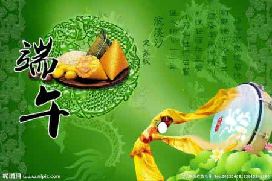

诗词飘香：
轻汗微微透碧纨，明朝端午浴芳兰。——苏轼《浣溪沙 端午》
国亡身殒今何有，只留离骚在世间。——张耒《和端午》
年年端午风兼雨，似为屈原陈昔冤。——赵蕃《端午三首》
四时花竞巧，九子粽争新。 ——唐 李隆基《端午三殿宴群臣探得神字》
碧艾香蒲处处忙。谁家儿共女，庆端阳。——舒頔《小重山·端午》
独写菖蒲竹叶杯，蓬城芳草踏初回。——汤显祖《午日处州禁竞渡》
五月五日午，赠我一枝艾。——文天祥《端午即事》
风雨端阳生晦冥，汨罗无处吊英灵。——贝琼《已酉端午》
官衣亦有名，端午被恩荣。 细葛含风软，香罗叠雪轻。 ——唐 杜甫《端午日赐衣》
不效艾符趋习俗，但祈蒲酒话升平。——殷尧藩《端午日》
儿女纷纷夸结束，新样钗符艾虎。——刘克庄《贺新郎·端午》
好酒沈醉酬佳节，十分酒，一分歌。 ——宋 苏轼《少年游 端午赠黄守徐君猷》
粽团桃柳，盈门共饮，把菖蒲、旋刻个人人。 ——宋 秦观失调名《端午》
正是浴兰时节动。菖蒲酒美清尊共。——欧阳修《渔家傲·五月榴花妖艳烘》
绿杨带雨垂垂重。五色新丝缠角粽。——欧阳修《渔家傲·五月榴花妖艳烘》
